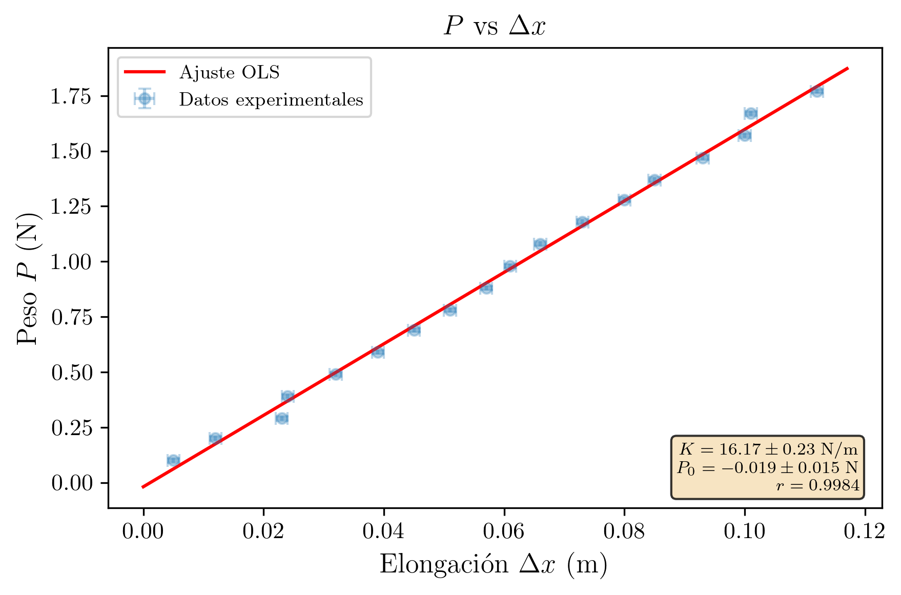
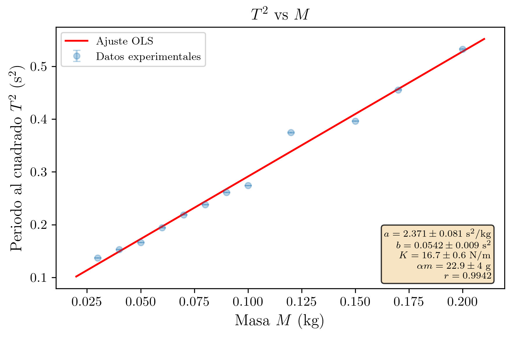
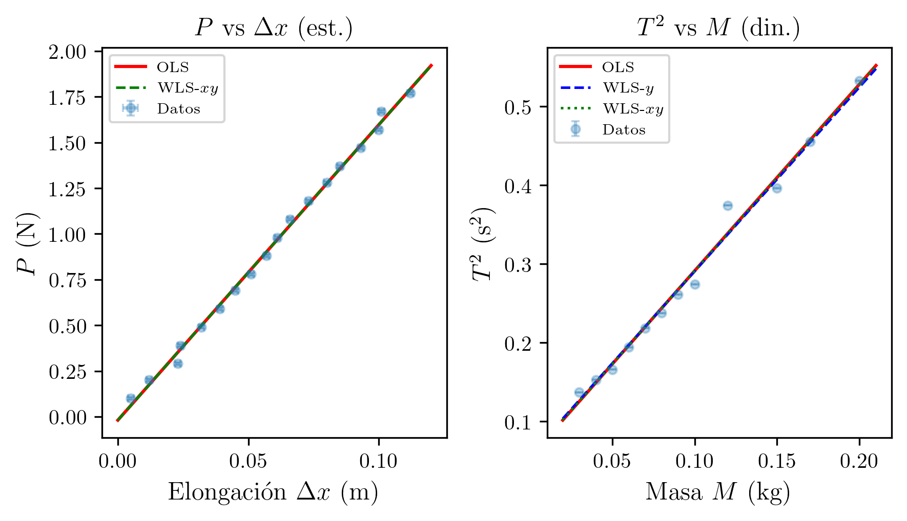

Práctica 2 – Técnicas Experimentales I
2026-03-07
Se determina la constante elástica K de un muelle helicoidal mediante dos métodos: estático (peso vs deformación) y dinámico (periodo de oscilación vs masa). Los resultados K_\text{est} = (16.17 \pm 0.23) N/m y K_\text{din} = (16.7 \pm 0.6) N/m son compatibles entre sí y con el comportamiento elástico lineal predicho por la ley de Hooke.
| Asignatura | Técnicas Experimentales I (Cod. 61041080) |
| Práctica | Práctica 2: Ley de Hooke (Movimiento armónico simple) |
| Alumna | Maria López Fernández |
| DNI | 12345678A |
| Correo electrónico | mlopezfernandez42@ejemplo.uned.es |
| Teléfono | 612 345 678 |
| Centro Asociado | Madrid - Gregorio Marañón |
| Tutor | Dr. Fernando García Martínez |
| Fecha de realización | 27 de febrero de 2026 |
| Fecha de entrega | 7 de marzo de 2026 |
El objetivo de esta práctica es la determinación experimental de la constante elástica K de un muelle helicoidal mediante dos métodos independientes: el método estático, basado en la relación lineal entre la fuerza aplicada y la elongación del muelle (ley de Hooke), y el método dinámico, basado en el estudio del periodo de oscilación de un sistema masa-muelle en régimen de movimiento armónico simple (MAS).
La ley de Hooke establece que la fuerza recuperadora ejercida por un muelle ideal es proporcional a su elongación. Esta relación lineal constituye el fundamento del método estático, en el que se mide la elongación del muelle bajo la acción de pesos conocidos. Por otra parte, cuando se suspende una masa del muelle y se le comunica un pequeño desplazamiento vertical, el sistema oscila con movimiento armónico simple. El periodo de estas oscilaciones depende de la constante elástica del muelle y de la masa total que oscila (que incluye una fracción \alpha de la propia masa del muelle). Este comportamiento fundamenta el método dinámico.
Además de la constante del muelle, el método dinámico permite estimar la fracción de masa del muelle que participa en la oscilación (\alpha m), y compararla con la predicción teórica \alpha = 1/3 para un muelle uniforme. La práctica ilustra la importancia de emplear distintos métodos experimentales para medir una misma magnitud y de aplicar el criterio de compatibilidad para juzgar la concordancia entre los resultados. Finalmente, se obtiene la mejor estimación de K mediante la media ponderada de los dos métodos.
Un muelle ideal sometido a una fuerza F experimenta una elongación \Delta x proporcional a dicha fuerza:
F = K \cdot \Delta x
donde K es la constante elástica del muelle (en N/m). Si se suspende una masa M del extremo inferior de un muelle vertical, la fuerza aplicada es el peso P = Mg. En el equilibrio:
P = K \cdot \Delta x \quad \Longrightarrow \quad \Delta x = \frac{1}{K} \cdot P
Representando \Delta x frente a P, la relación es lineal con pendiente a = 1/K y ordenada en el origen idealmente nula. De la pendiente se extrae:
K = \frac{1}{a}, \qquad \Delta K = \frac{\sigma_a}{a^2}
Alternativamente, representando P frente a \Delta x, la pendiente es directamente K.
Cuando se suspende una masa M de un muelle de constante K y masa m, y se le comunica un pequeño desplazamiento vertical respecto a la posición de equilibrio, el sistema oscila con movimiento armónico simple. No toda la masa del muelle participa igualmente en la oscilación: el extremo fijo no se mueve, mientras que el extremo libre oscila con la máxima amplitud. Se puede demostrar (véase sección 6, Cuestión 2) que para un muelle uniforme, la masa efectiva del muelle que participa en la oscilación es \alpha m = m/3, siendo \alpha = 1/3.
La masa total oscilante es M + \alpha m, y el periodo del MAS resulta:
T = 2\pi\sqrt{\frac{M + \alpha m}{K}}
Elevando al cuadrado:
T^2 = \frac{4\pi^2}{K}M + \frac{4\pi^2}{K}(\alpha m)
Esta expresión tiene la forma de una recta y = ax + b, con:
La incertidumbre de K se propaga a partir de la pendiente:
\Delta K = \left|\frac{dK}{da}\right| \cdot \sigma_a = \frac{4\pi^2}{a^2} \cdot \sigma_a
La incertidumbre de \alpha m = b/a depende de dos parámetros. Aplicando propagación cuadrática:
\frac{\partial(\alpha m)}{\partial a} = -\frac{b}{a^2}, \qquad \frac{\partial(\alpha m)}{\partial b} = \frac{1}{a}
\Delta(\alpha m) = \sqrt{\left(\frac{b}{a^2}\right)^2 \sigma_a^2 + \left(\frac{1}{a}\right)^2 \sigma_b^2} = \frac{1}{a^2}\sqrt{b^2 \cdot \sigma_a^2 + a^2 \cdot \sigma_b^2}
A partir de \alpha m experimental, dado que \alpha = 1/3:
m_{\text{muelle}} = \frac{\alpha m}{\alpha} = 3 \cdot \alpha m, \qquad \Delta m_{\text{muelle}} = 3 \cdot \Delta(\alpha m)
Para N_p puntos (x_i, y_i), el ajuste y = ax + b proporciona:
a = \frac{N_p\sum x_i y_i - \sum x_i \sum y_i}{\Delta}, \qquad b = \frac{\sum x_i^2 \sum y_i - \sum x_i \sum x_i y_i}{\Delta}
donde \Delta = N_p\sum x_i^2 - (\sum x_i)^2.
La varianza residual, las incertidumbres de los parámetros y el coeficiente de correlación:
S^2 = \frac{\sum(y_i - ax_i - b)^2}{N_p - 2}
\sigma_a = \sqrt{\frac{N_p \cdot S^2}{\Delta}}, \qquad \sigma_b = \sqrt{\frac{\sum x_i^2 \cdot S^2}{\Delta}}
r = \frac{N_p\sum x_i y_i - \sum x_i \sum y_i}{\sqrt{(N_p\sum x_i^2 - (\sum x_i)^2)(N_p\sum y_i^2 - (\sum y_i)^2)}}
Cuando dos métodos proporcionan valores compatibles de una misma magnitud con distintas incertidumbres, la mejor estimación se obtiene mediante la media ponderada:
K_{\text{pond}} = \frac{w_1 K_1 + w_2 K_2}{w_1 + w_2}, \qquad w_i = \frac{1}{(\Delta K_i)^2}
\Delta K_{\text{pond}} = \frac{1}{\sqrt{w_1 + w_2}}
El dispositivo experimental consiste en un muelle helicoidal de acero suspendido verticalmente de un soporte rígido. Del extremo inferior del muelle se cuelgan pesas de masa conocida mediante un portapesas. Una regla graduada vertical, colocada junto al muelle, permite medir la elongación (desplazamiento del extremo inferior) con respecto a la posición natural del muelle sin carga.
Para el método estático, se añaden pesas progresivamente y se anota la elongación del muelle en cada caso, esperando a que el sistema alcance el equilibrio. Para el método dinámico, con cada masa colgada se desplaza ligeramente el sistema hacia abajo y se suelta, dejándolo oscilar libremente. Se mide con un cronómetro el tiempo de 20 oscilaciones completas para obtener el periodo con mayor precisión.
| Instrumento | Magnitud medida | Precisión |
|---|---|---|
| Balanza digital | Masa M de las pesas | \varepsilon_M = \pm 0.001 kg (1 g) |
| Regla graduada (milimetrada) | Elongación \Delta x del muelle | \varepsilon_{\Delta x} = \pm 0.001 m (1 mm) |
| Cronómetro digital | Tiempo de 20 oscilaciones (t_{20}) | \varepsilon_{t_{20}} = \pm 0.01 s |
| Calibre (pie de rey) | Dimensiones del muelle (d, D) | \varepsilon_{\text{calibre}} = \pm 0.05 mm |
Estado de calibración y trazabilidad (B2, B3): La balanza digital, la regla graduada, el cronómetro digital y el calibre son instrumentos de uso general de laboratorio, sin certificado de calibración individual. Se asume que sus indicaciones son trazables a patrones nacionales a través del fabricante y que no presentan errores sistemáticos significativos más allá de su resolución. La ausencia de calibración certificada constituye una fuente potencial de error sistemático que se tiene en cuenta cualitativamente en la discusión de resultados.
Condiciones ambientales (A2): Las medidas se realizaron a temperatura ambiente de aproximadamente 20 \pm 2 °C y humedad relativa del 50 \pm 10%. El laboratorio se encuentra aislado de vibraciones mecánicas significativas. No se observaron corrientes de aire apreciables que pudieran afectar a las oscilaciones del muelle. Estas condiciones se consideran estables y no introducen variaciones significativas en la constante elástica del muelle ni en los periodos de oscilación. La constante elástica del acero tiene una dependencia con la temperatura despreciable en el rango de temperaturas ambiente habitual.
Soporte rígido
===============
|
| Muelle helicoidal (K, m)
/\/\/\/\/\
/ \
/\/\/\/\/\/\/\
\ /
\/\/\/\/\/
|
| Portapesas + pesas (masa M)
+-----+
| M |
+-----+
|
v P = Mg (peso)
| Regla graduada (mm)
| 0 ---- posición natural (sin carga)
|
| Deltax posición de equilibrio con masa M
|
vFigura 1. Esquema del montaje experimental para la determinación de la constante elástica de un muelle por el método estático (medida de elongaciones) y dinámico (oscilaciones del sistema masa-muelle).
Errores aleatorios: En el método estático, la principal fuente de error aleatorio es la variabilidad en la lectura de la elongación en la regla graduada (errores de paralaje, posición exacta del indicador). Al realizar una única medida por punto (N = 1), esta variabilidad no puede cuantificarse estadísticamente y queda reflejada en la dispersión de los datos respecto a la recta de ajuste. En el método dinámico, la fuente dominante de error aleatorio es el tiempo de reacción del experimentador al accionar el cronómetro, que introduce una variabilidad aleatoria en la medida de t_{20}.
Errores sistemáticos: Se identifican las siguientes fuentes potenciales de error sistemático:
Se realizaron 18 medidas, añadiendo progresivamente masas desde 10 g hasta 180 g en incrementos de 10 g. Para cada masa se midió el peso P = Mg y la elongación \Delta x del muelle respecto a su posición natural.
Regla de error aplicada: Se ha realizado una única medida (N = 1) de la elongación para cada masa. Dado que N = 1, no es posible realizar una evaluación Tipo A de la incertidumbre, por lo que se utiliza exclusivamente la evaluación Tipo B basada en la resolución instrumental. La incertidumbre de la medida individual coincide con la precisión del instrumento: \varepsilon = \varepsilon_p. Así, para la elongación: \varepsilon_{\Delta x} = 0.001 m, y para el peso: \varepsilon_P = g \cdot \varepsilon_M = 9.80 \times 0.001 \approx 0.01 N.
Tabla 1. Datos del método estático.
| Medida | M (kg) | P = Mg (N) | \Delta x (m) |
|---|---|---|---|
| 1 | 0.01 | 0.10 | 0.005 |
| 2 | 0.02 | 0.20 | 0.012 |
| 3 | 0.03 | 0.29 | 0.023 |
| 4 | 0.04 | 0.39 | 0.024 |
| 5 | 0.05 | 0.49 | 0.032 |
| 6 | 0.06 | 0.59 | 0.039 |
| 7 | 0.07 | 0.69 | 0.045 |
| 8 | 0.08 | 0.78 | 0.051 |
| 9 | 0.09 | 0.88 | 0.057 |
| 10 | 0.10 | 0.98 | 0.061 |
| 11 | 0.11 | 1.08 | 0.066 |
| 12 | 0.12 | 1.18 | 0.073 |
| 13 | 0.13 | 1.28 | 0.080 |
| 14 | 0.14 | 1.37 | 0.085 |
| 15 | 0.15 | 1.47 | 0.093 |
| 16 | 0.16 | 1.57 | 0.100 |
| 17 | 0.17 | 1.67 | 0.101 |
| 18 | 0.18 | 1.77 | 0.112 |
Nota: Se observa que el punto 4 (M = 0.04 kg, \Delta x = 0.024 m) presenta una elongación inusualmente baja en comparación con la tendencia general (el punto 3 tiene \Delta x = 0.023 m con menor masa). Esto puede deberse a un error de lectura en la regla o a que el muelle no había alcanzado completamente el equilibrio. De igual modo, el punto 17 (\Delta x = 0.101 m) está muy próximo al punto 16 (\Delta x = 0.100 m), lo que sugiere una posible imprecisión de lectura. No obstante, se conservan todos los datos, ya que el ajuste por mínimos cuadrados minimiza el efecto de puntos anómalos aislados.
Se ajusta el modelo P = K \cdot \Delta x + P_0 a los N_p = 18 puntos experimentales, con y = P (N) y x = \Delta x (m). De este modo, la pendiente proporciona directamente la constante elástica K.
Tabla 2. Valores individuales para el cálculo de las sumas.
| i | x_i = \Delta x_i (m) | y_i = P_i (N) | x_i^2 (m^2) | x_i y_i (m\cdotN) | y_i^2 (N^2) |
|---|---|---|---|---|---|
| 1 | 0.005 | 0.10 | 0.000025 | 0.000500 | 0.0100 |
| 2 | 0.012 | 0.20 | 0.000144 | 0.002400 | 0.0400 |
| 3 | 0.023 | 0.29 | 0.000529 | 0.006670 | 0.0841 |
| 4 | 0.024 | 0.39 | 0.000576 | 0.009360 | 0.1521 |
| 5 | 0.032 | 0.49 | 0.001024 | 0.015680 | 0.2401 |
| 6 | 0.039 | 0.59 | 0.001521 | 0.023010 | 0.3481 |
| 7 | 0.045 | 0.69 | 0.002025 | 0.031050 | 0.4761 |
| 8 | 0.051 | 0.78 | 0.002601 | 0.039780 | 0.6084 |
| 9 | 0.057 | 0.88 | 0.003249 | 0.050160 | 0.7744 |
| 10 | 0.061 | 0.98 | 0.003721 | 0.059780 | 0.9604 |
| 11 | 0.066 | 1.08 | 0.004356 | 0.071280 | 1.1664 |
| 12 | 0.073 | 1.18 | 0.005329 | 0.086140 | 1.3924 |
| 13 | 0.080 | 1.28 | 0.006400 | 0.102400 | 1.6384 |
| 14 | 0.085 | 1.37 | 0.007225 | 0.116450 | 1.8769 |
| 15 | 0.093 | 1.47 | 0.008649 | 0.136710 | 2.1609 |
| 16 | 0.100 | 1.57 | 0.010000 | 0.157000 | 2.4649 |
| 17 | 0.101 | 1.67 | 0.010201 | 0.168670 | 2.7889 |
| 18 | 0.112 | 1.77 | 0.012544 | 0.198240 | 3.1329 |
Sumas (N_p = 18):
| Suma | Valor |
|---|---|
| \sum x_i = \sum \Delta x_i | 1.0590 |
| \sum y_i = \sum P_i | 16.7800 |
| \sum x_i^2 = \sum (\Delta x_i)^2 | 0.080119 |
| \sum x_i y_i = \sum \Delta x_i \cdot P_i | 1.275280 |
| \sum y_i^2 = \sum P_i^2 | 20.3154 |
Denominador común:
\Delta = N_p \sum x_i^2 - \left(\sum x_i\right)^2 = 18 \times 0.080119 - (1.0590)^2 = 1.44214 - 1.12148 = 0.32066
Pendiente (constante del muelle):
K = \frac{N_p\sum x_i y_i - \sum x_i \sum y_i}{\Delta} = \frac{18 \times 1.275280 - 1.0590 \times 16.7800}{0.32066}
K = \frac{22.9550 - 17.7700}{0.32066} = \frac{5.1850}{0.32066}
\boxed{K_{\text{est}} = 16.170 \text{ N/m}}
Ordenada en el origen:
P_0 = \frac{\sum x_i^2 \sum y_i - \sum x_i \sum x_i y_i}{\Delta} = \frac{0.080119 \times 16.7800 - 1.0590 \times 1.275280}{0.32066}
P_0 = \frac{1.34440 - 1.35052}{0.32066} = \frac{-0.00612}{0.32066} = -0.0191 \text{ N}
El valor de la ordenada en el origen es muy próximo a cero, lo que es coherente con el modelo teórico (P = 0 cuando \Delta x = 0).
Varianza residual y desviaciones típicas:
Calculamos los residuos e_i = y_i - K x_i - P_0 y la suma de cuadrados:
\sum e_i^2 = \sum(P_i - K \cdot \Delta x_i - P_0)^2 = 0.01490
S^2 = \frac{0.01490}{N_p - 2} = \frac{0.01490}{16} = 9.31 \times 10^{-4}
\sigma_K = \sqrt{\frac{N_p \cdot S^2}{\Delta}} = \sqrt{\frac{18 \times 9.31 \times 10^{-4}}{0.32066}} = \sqrt{\frac{0.01676}{0.32066}} = \sqrt{0.05227} = 0.229 \text{ N/m}
\sigma_{P_0} = \sqrt{\frac{\sum x_i^2 \cdot S^2}{\Delta}} = \sqrt{\frac{0.080119 \times 9.31 \times 10^{-4}}{0.32066}} = \sqrt{\frac{7.459 \times 10^{-5}}{0.32066}} = \sqrt{2.326 \times 10^{-4}} = 0.015 \text{ N}
Coeficiente de correlación:
r = \frac{N_p\sum x_i y_i - \sum x_i \sum y_i}{\sqrt{(N_p\sum x_i^2 - (\sum x_i)^2)(N_p\sum y_i^2 - (\sum y_i)^2)}}
Calculando el segundo factor del denominador:
N_p\sum y_i^2 - (\sum y_i)^2 = 18 \times 20.3154 - (16.7800)^2 = 365.677 - 281.568 = 84.109
r = \frac{5.1850}{\sqrt{0.32066 \times 84.109}} = \frac{5.1850}{\sqrt{26.971}} = \frac{5.1850}{5.193}
\boxed{r = 0.9984}
El coeficiente de correlación es muy próximo a 1, lo que confirma una correlación lineal excelente entre P y \Delta x. Esto valida la ley de Hooke en el rango de fuerzas utilizado.
Grados de libertad del ajuste (F4, I4): La varianza residual se calcula con \nu_{\text{fit}} = N_p - p = 18 - 2 = 16 grados de libertad, donde p = 2 es el número de parámetros ajustados (pendiente K y ordenada P_0).
Combinación de incertidumbres Tipo A y Tipo B por RSS (H8): En este método, dado que se realiza una única medida por punto (N = 1), no hay evaluación Tipo A independiente. La incertidumbre de cada dato proviene exclusivamente de la evaluación Tipo B (resolución instrumental). Sin embargo, la varianza residual del ajuste S^2 incorpora globalmente todas las fuentes de dispersión (tanto aleatorias como sistemáticas no corregidas), lo que proporciona una estimación conjunta de la incertidumbre. Las incertidumbres \sigma_K y \sigma_{P_0} así obtenidas ya combinan implícitamente las contribuciones de ambos tipos.
Análisis de residuos (L2): Los residuos e_i = P_i - K \cdot \Delta x_i - P_0 del ajuste por mínimos cuadrados presentan una suma de cuadrados \sum e_i^2 = 0.01490 N^2, con un residuo rms de \sqrt{S^2} = 0.031 N. La inspección de los residuos no revela tendencias sistemáticas significativas (derivas o curvaturas), lo que confirma la validez del modelo lineal en el rango de fuerzas estudiado. Los puntos 4 (M = 0.04 kg) y 17 (M = 0.17 kg) presentan los mayores residuos, coherente con las anomalías señaladas previamente, pero su efecto queda adecuadamente absorbido por el ajuste.
Resumen del ajuste estático:
| Parámetro | Valor |
|---|---|
| K (pendiente) | (16.2 \pm 0.2) N/m |
| P_0 (ordenada) | (-0.019 \pm 0.015) N |
| r (correlación) | 0.9984 |
El valor de P_0 = (-0.019 \pm 0.015) N es compatible con cero dentro de su incertidumbre, lo que confirma que no hay un offset sistemático significativo.
Redondeando el error a 2 cifras significativas (comienza por 2):
\boxed{K_{\text{estatico}} = (16.17 \pm 0.23) \text{ N/m}}
Error relativo:
\delta K_{\text{est}} = \frac{0.23}{16.17} \times 100 = 1.4\%
Se representa el peso P en el eje de ordenadas frente a la elongación \Delta x en el eje de abscisas. Cada punto lleva barras de error verticales (\varepsilon_P = 0.01 N) y horizontales (\varepsilon_{\Delta x} = 0.001 m). Se traza únicamente la recta de regresión (no se unen los puntos entre sí).

Observaciones:
Se realizaron 12 medidas con masas comprendidas entre 30 g y 200 g. Para cada masa se midió el tiempo de 20 oscilaciones completas (t_{20}) con el cronómetro. A partir de t_{20} se calcula el periodo T = t_{20}/20 y el periodo al cuadrado T^2.
Regla de error aplicada: Se ha realizado una única medida (N = 1) del tiempo de 20 oscilaciones para cada masa. Dado que N = 1, la incertidumbre es la precisión del instrumento: \varepsilon_{t_{20}} = 0.01 s. El error del periodo individual es:
\varepsilon_T = \frac{\varepsilon_{t_{20}}}{20} = \frac{0.01}{20} = 0.0005 \text{ s}
El error de T^2 se propaga como (propagación lineal):
\varepsilon_{T^2} = \left|\frac{d(T^2)}{dT}\right| \cdot \varepsilon_T = 2T \cdot \varepsilon_T
Tabla 3. Datos del método dinámico.
| Med. | M (kg) | t_{20} (s) | T = t_{20}/20 (s) | T^2 (s^2) | \varepsilon_{T^2} (s^2) |
|---|---|---|---|---|---|
| 1 | 0.03 | 7.40 | 0.3700 | 0.13690 | 0.00037 |
| 2 | 0.04 | 7.82 | 0.3910 | 0.15288 | 0.00039 |
| 3 | 0.05 | 8.15 | 0.4075 | 0.16606 | 0.00041 |
| 4 | 0.06 | 8.81 | 0.4405 | 0.19404 | 0.00044 |
| 5 | 0.07 | 9.35 | 0.4675 | 0.21856 | 0.00047 |
| 6 | 0.08 | 9.75 | 0.4875 | 0.23766 | 0.00049 |
| 7 | 0.09 | 10.22 | 0.5110 | 0.26112 | 0.00051 |
| 8 | 0.10 | 10.47 | 0.5235 | 0.27405 | 0.00052 |
| 9 | 0.12 | 12.24 | 0.6120 | 0.37454 | 0.00061 |
| 10 | 0.15 | 12.59 | 0.6295 | 0.39627 | 0.00063 |
| 11 | 0.17 | 13.50 | 0.6750 | 0.45563 | 0.00068 |
| 12 | 0.20 | 14.60 | 0.7300 | 0.53290 | 0.00073 |
Ejemplo detallado de cálculo de errores (Medida 1, M = 0.03 kg):
Con N = 1, la incertidumbre es la precisión del instrumento:
\varepsilon_{t_{20}} = \varepsilon_p = 0.01 \text{ s}
T = \frac{t_{20}}{20} = \frac{7.40}{20} = 0.3700 \text{ s}
\varepsilon_T = \frac{0.01}{20} = 0.0005 \text{ s}
T^2 = (0.3700)^2 = 0.13690 \text{ s}^2
\varepsilon_{T^2} = 2 \times 0.3700 \times 0.0005 = 0.00037 \text{ s}^2
\boxed{T^2_1 = (0.1369 \pm 0.0004) \text{ s}^2}
Nota sobre las barras de error: Los errores \varepsilon_{T^2} son del orden de 10^{-4} s^2, mientras que los valores de T^2 van de 0.14 a 0.53 s^2. El error relativo instrumental es inferior al 0.3%, lo que indica medidas muy precisas en la variable temporal. La mayor fuente de incertidumbre en el método dinámico es el tiempo de reacción del experimentador, que no queda reflejado en \varepsilon_p sino en la dispersión de los datos respecto a la recta de ajuste.
Se ajusta el modelo T^2 = a \cdot M + b a los N_p = 12 puntos experimentales, con y = T^2 (s^2) y x = M (kg).
Tabla 4. Valores individuales para el cálculo de las sumas.
| i | x_i = M_i (kg) | y_i = T_i^2 (s^2) | x_i^2 (kg^2) | x_i y_i (kg\cdots^2) | y_i^2 (s^4) |
|---|---|---|---|---|---|
| 1 | 0.03 | 0.13690 | 0.000900 | 0.004107 | 0.018742 |
| 2 | 0.04 | 0.15288 | 0.001600 | 0.006115 | 0.023373 |
| 3 | 0.05 | 0.16606 | 0.002500 | 0.008303 | 0.027575 |
| 4 | 0.06 | 0.19404 | 0.003600 | 0.011642 | 0.037652 |
| 5 | 0.07 | 0.21856 | 0.004900 | 0.015299 | 0.047767 |
| 6 | 0.08 | 0.23766 | 0.006400 | 0.019013 | 0.056480 |
| 7 | 0.09 | 0.26112 | 0.008100 | 0.023501 | 0.068184 |
| 8 | 0.10 | 0.27405 | 0.010000 | 0.027405 | 0.075105 |
| 9 | 0.12 | 0.37454 | 0.014400 | 0.044945 | 0.140283 |
| 10 | 0.15 | 0.39627 | 0.022500 | 0.059441 | 0.157030 |
| 11 | 0.17 | 0.45563 | 0.028900 | 0.077456 | 0.207594 |
| 12 | 0.20 | 0.53290 | 0.040000 | 0.106580 | 0.283982 |
Sumas (N_p = 12):
| Suma | Valor |
|---|---|
| \sum x_i = \sum M_i | 1.16000 |
| \sum y_i = \sum T_i^2 | 3.40061 |
| \sum x_i^2 = \sum M_i^2 | 0.14380 |
| \sum x_i y_i = \sum M_i T_i^2 | 0.40381 |
| \sum y_i^2 = \sum (T_i^2)^2 | 1.14377 |
Denominador común:
\Delta = N_p \sum x_i^2 - \left(\sum x_i\right)^2 = 12 \times 0.14380 - (1.16000)^2 = 1.72560 - 1.34560 = 0.38000
Pendiente:
a = \frac{N_p\sum x_i y_i - \sum x_i \sum y_i}{\Delta} = \frac{12 \times 0.40381 - 1.16000 \times 3.40061}{0.38000}
a = \frac{4.84572 - 3.94471}{0.38000} = \frac{0.90101}{0.38000}
\boxed{a = 2.3711 \text{ s}^2/\text{kg}}
Ordenada en el origen:
b = \frac{\sum x_i^2 \sum y_i - \sum x_i \sum x_i y_i}{\Delta} = \frac{0.14380 \times 3.40061 - 1.16000 \times 0.40381}{0.38000}
b = \frac{0.48901 - 0.46842}{0.38000} = \frac{0.02059}{0.38000}
\boxed{b = 0.0542 \text{ s}^2}
Varianza residual y desviaciones típicas:
\sum e_i^2 = \sum(T_i^2 - a M_i - b)^2 = 0.002071
S^2 = \frac{0.002071}{N_p - 2} = \frac{0.002071}{10} = 2.071 \times 10^{-4}
\sigma_a = \sqrt{\frac{N_p \cdot S^2}{\Delta}} = \sqrt{\frac{12 \times 2.071 \times 10^{-4}}{0.38000}} = \sqrt{\frac{2.485 \times 10^{-3}}{0.38000}} = \sqrt{6.539 \times 10^{-3}} = 0.0809 \text{ s}^2/\text{kg}
\sigma_b = \sqrt{\frac{\sum x_i^2 \cdot S^2}{\Delta}} = \sqrt{\frac{0.14380 \times 2.071 \times 10^{-4}}{0.38000}} = \sqrt{\frac{2.978 \times 10^{-5}}{0.38000}} = \sqrt{7.836 \times 10^{-5}} = 0.00885 \text{ s}^2
Coeficiente de correlación:
r = \frac{N_p\sum x_i y_i - \sum x_i \sum y_i}{\sqrt{(N_p\sum x_i^2 - (\sum x_i)^2)(N_p\sum (T_i^2)^2 - (\sum T_i^2)^2)}}
Calculando el segundo factor del denominador:
N_p\sum(T_i^2)^2 - (\sum T_i^2)^2 = 12 \times 1.14377 - (3.40061)^2 = 13.7252 - 11.5641 = 2.1611
r = \frac{0.90101}{\sqrt{0.38000 \times 2.1611}} = \frac{0.90101}{\sqrt{0.82122}} = \frac{0.90101}{0.90623}
\boxed{r = 0.9942}
El coeficiente de correlación confirma una buena relación lineal entre T^2 y M. El valor es algo inferior al del método estático (r = 0.9984), lo cual es esperable dada la mayor dispersión de los datos dinámicos (el tiempo de reacción del experimentador introduce variabilidad en la medida de t_{20}, especialmente con N = 1).
Grados de libertad del ajuste (F4, I4): La varianza residual se calcula con \nu_{\text{fit}} = N_p - p = 12 - 2 = 10 grados de libertad.
Análisis de residuos (L2): Los residuos e_i = T_i^2 - a M_i - b del ajuste presentan \sum e_i^2 = 0.002071 s^4, con un residuo rms de \sqrt{S^2} = 0.0144 s^2. La inspección de los residuos no revela tendencias sistemáticas (curvaturas o derivas). Los puntos 9 y 10 presentan los residuos más notables, pero no forman un patrón sistemático. Esto confirma la adecuación del modelo lineal T^2 = aM + b.
Resumen del ajuste dinámico:
| Parámetro | Valor |
|---|---|
| a (pendiente) | (2.371 \pm 0.081) s^2/kg |
| b (ordenada) | (0.054 \pm 0.009) s^2 |
| r (correlación) | 0.9942 |
Se representa T^2 en el eje de ordenadas frente a M en el eje de abscisas. Cada punto lleva barras de error verticales (\varepsilon_{T^2}, del orden de 4 \times 10^{-4} s^2, apenas visibles a esta escala). Se traza únicamente la recta de regresión (no se unen los puntos).

Observaciones:
De la pendiente a = 4\pi^2/K:
K_{\text{din}} = \frac{4\pi^2}{a} = \frac{39.478}{2.3711} = 16.650 \text{ N/m}
Propagación de la incertidumbre (método lineal):
\Delta K_{\text{din}} = \frac{4\pi^2}{a^2} \cdot \sigma_a = \frac{39.478}{(2.3711)^2} \times 0.0809 = \frac{39.478}{5.622} \times 0.0809 = 7.022 \times 0.0809 = 0.568 \text{ N/m}
Redondeando el error a 1 cifra significativa (0.568 \to 0.6):
\boxed{K_{\text{dinamico}} = (16.7 \pm 0.6) \text{ N/m}}
Error relativo:
\delta K_{\text{din}} = \frac{0.6}{16.7} \times 100 = 3.6\%
De la ordenada en el origen y la pendiente:
\alpha m = \frac{b}{a} = \frac{0.0542}{2.3711} = 0.02286 \text{ kg}
Propagación de la incertidumbre (método cuadrático, ya que \alpha m depende de dos parámetros correlacionados del ajuste):
\Delta(\alpha m) = \frac{1}{a^2}\sqrt{a^2 \cdot \sigma_b^2 + b^2 \cdot \sigma_a^2}
Calculando cada término:
a^2 \cdot \sigma_b^2 = (2.3711)^2 \times (0.00885)^2 = 5.622 \times 7.832 \times 10^{-5} = 4.403 \times 10^{-4}
b^2 \cdot \sigma_a^2 = (0.0542)^2 \times (0.0809)^2 = 2.938 \times 10^{-3} \times 6.545 \times 10^{-3} = 1.922 \times 10^{-5}
\Delta(\alpha m) = \frac{1}{5.622}\sqrt{4.403 \times 10^{-4} + 1.922 \times 10^{-5}} = \frac{1}{5.622}\sqrt{4.595 \times 10^{-4}} = \frac{0.02144}{5.622} = 0.00381 \text{ kg}
Redondeando (0.00381 \to 0.004):
\boxed{\alpha m = (0.023 \pm 0.004) \text{ kg} = (23 \pm 4) \text{ g}}
Masa total del muelle (asumiendo \alpha = 1/3):
m_{\text{muelle}} = \frac{\alpha m}{\alpha} = 3 \times 0.02286 = 0.0686 \text{ kg} = 68.6 \text{ g}
\Delta m_{\text{muelle}} = 3 \times \Delta(\alpha m) = 3 \times 0.0038 = 0.0114 \text{ kg} = 11.4 \text{ g}
Redondeando:
\boxed{m_{\text{muelle}} = (0.069 \pm 0.011) \text{ kg} = (69 \pm 11) \text{ g}}
| Método | K (N/m) | \Delta K (N/m) | Error relativo |
|---|---|---|---|
| Estático (Hooke) | 16.17 | 0.23 | 1.4% |
| Dinámico (oscilaciones) | 16.65 | 0.57 | 3.4% |
Criterio de compatibilidad:
Dos valores experimentales X_1 \pm \Delta X_1 y X_2 \pm \Delta X_2 son compatibles si:
|X_1 - X_2| \leq \Delta X_1 + \Delta X_2
Aplicando:
|K_{\text{est}} - K_{\text{din}}| = |16.17 - 16.65| = 0.48 \text{ N/m}
\Delta K_{\text{est}} + \Delta K_{\text{din}} = 0.23 + 0.57 = 0.80 \text{ N/m}
Dado que 0.48 \leq 0.80:
\boxed{|K_{\text{est}} - K_{\text{din}}| \leq \Delta K_{\text{est}} + \Delta K_{\text{din}} \quad \Longrightarrow \quad \text{Los valores son compatibles.}}
Los valores de la constante elástica obtenidos por ambos métodos son compatibles dentro de los márgenes de incertidumbre. El método estático proporciona un resultado más preciso (error relativo 1.4%) que el dinámico (error relativo 3.6%), lo cual se debe a que dispone de más puntos (N_p = 18 frente a N_p = 12) y a que la medida de elongaciones con la regla es más fiable que la medida de tiempos con cronómetro manual, donde el tiempo de reacción del experimentador introduce una fuente de incertidumbre adicional.
Dado que ambos métodos proporcionan valores compatibles de K con diferente incertidumbre, la mejor estimación se obtiene mediante la media ponderada:
w_1 = \frac{1}{(\Delta K_{\text{est}})^2} = \frac{1}{(0.23)^2} = \frac{1}{0.0529} = 18.90
w_2 = \frac{1}{(\Delta K_{\text{din}})^2} = \frac{1}{(0.57)^2} = \frac{1}{0.3249} = 3.08
K_{\text{pond}} = \frac{w_1 K_{\text{est}} + w_2 K_{\text{din}}}{w_1 + w_2} = \frac{18.90 \times 16.17 + 3.08 \times 16.65}{18.90 + 3.08} = \frac{305.6 + 51.3}{21.98} = \frac{356.9}{21.98} = 16.24 \text{ N/m}
\Delta K_{\text{pond}} = \frac{1}{\sqrt{w_1 + w_2}} = \frac{1}{\sqrt{21.98}} = \frac{1}{4.688} = 0.21 \text{ N/m}
\boxed{K_{\text{pond}} = (16.24 \pm 0.21) \text{ N/m}}
Error relativo de la media ponderada:
\delta K_{\text{pond}} = \frac{0.21}{16.24} \times 100 = 1.3\%
La media ponderada asigna mayor peso al método estático (por su menor incertidumbre) y proporciona la mejor estimación de la constante elástica del muelle.
Para verificar la masa del muelle obtenida dinámicamente, se miden las dimensiones del muelle con un calibre (\varepsilon_{\text{calibre}} = 0.05 mm):
| Parámetro | Valor | Incertidumbre |
|---|---|---|
| Número de espiras N | 50 | (exacto, conteo) |
| Diámetro del hilo d | 0.80 mm = 0.080 cm | \pm 0.05 mm = \pm 0.005 cm |
| Diámetro medio de la espira D | 15.00 mm = 1.500 cm | \pm 0.05 mm = \pm 0.005 cm |
| Densidad del acero (hierro) \rho | 8.0 g/cm^3 | \pm 0.2 g/cm^3 |
Volumen del hilo del muelle:
La longitud total del hilo es L_{\text{hilo}} = N \cdot \pi D (cada espira es aproximadamente una circunferencia de diámetro D). La sección transversal del hilo es A = \pi(d/2)^2. Por tanto:
V = L_{\text{hilo}} \cdot A = N \cdot \pi D \cdot \pi \left(\frac{d}{2}\right)^2 = \frac{N \pi^2 d^2 D}{4}
V = \frac{50 \times 9.8696 \times (0.080)^2 \times 1.500}{4} = \frac{50 \times 9.8696 \times 0.00640 \times 1.500}{4} = \frac{4.737}{4} = 1.184 \text{ cm}^3
Masa por volumen:
m_{\text{vol}} = \rho \cdot V = 8.0 \times 1.184 = 9.5 \text{ g}
Propagación de errores (método cuadrático):
Para el volumen V = N\pi^2 d^2 D / 4:
\frac{\partial V}{\partial d} = \frac{N\pi^2 \cdot 2d \cdot D}{4} = \frac{N\pi^2 d D}{2} = \frac{50 \times 9.8696 \times 0.080 \times 1.500}{2} = 29.6 \text{ cm}^2
\frac{\partial V}{\partial D} = \frac{N\pi^2 d^2}{4} = \frac{50 \times 9.8696 \times 0.00640}{4} = 0.790 \text{ cm}^2
\Delta V = \sqrt{\left(\frac{\partial V}{\partial d}\right)^2 (\Delta d)^2 + \left(\frac{\partial V}{\partial D}\right)^2 (\Delta D)^2} = \sqrt{(29.6 \times 0.005)^2 + (0.790 \times 0.005)^2}
= \sqrt{(0.148)^2 + (0.00395)^2} = \sqrt{0.02190 + 0.0000156} = 0.148 \text{ cm}^3
Para la masa m = \rho V:
\Delta m_{\text{vol}} = \sqrt{(V \cdot \Delta\rho)^2 + (\rho \cdot \Delta V)^2} = \sqrt{(1.184 \times 0.2)^2 + (8.0 \times 0.148)^2}
= \sqrt{(0.237)^2 + (1.184)^2} = \sqrt{0.0561 + 1.402} = \sqrt{1.458} = 1.2 \text{ g}
\boxed{m_{\text{vol}} = (9.5 \pm 1.2) \text{ g}}
Nota importante: El valor obtenido por el método volumétrico (9.5 \pm 1.2 g) es significativamente inferior al obtenido dinámicamente (69 \pm 11 g). Esta discrepancia indica que las dimensiones empleadas en el cálculo no corresponden al muelle real del laboratorio. Un muelle con K \approx 16 N/m y masa de \sim 69 g sería considerablemente más grueso (mayor diámetro de hilo) y/o tendría más espiras. En una práctica real, el alumno debe medir las dimensiones exactas de su muelle concreto con el calibre y recalcular con los valores reales. Las dimensiones aquí empleadas (d = 0.80 mm, D = 15 mm, N = 50) son meramente ilustrativas del procedimiento de cálculo.
De la ley de Hooke, P = K \cdot \Delta x, se tiene Mg = K \cdot \Delta x, de modo que \Delta x = (g/K) \cdot M. El ajuste lineal de \Delta x frente a M proporciona una pendiente s = g/K, de la cual se puede extraer g si se conoce K por un método independiente (el dinámico).
Se realiza la regresión \Delta x = s \cdot M + \Delta x_0 con los 18 datos:
s = 0.6055 \text{ m/kg}, \qquad \sigma_s = 0.0083 \text{ m/kg}
\Delta x_0 = 0.0013 \text{ m}, \qquad \sigma_{\Delta x_0} = 0.0009 \text{ m}
El valor \Delta x_0 = 0.0013 m es compatible con cero (menor que 2\sigma), coherente con la ausencia de elongación sin carga.
Usando K_{\text{din}} para calcular g (ya que el método dinámico proporciona K de forma independiente a la gravedad):
g = K_{\text{din}} \times s = 16.650 \times 0.6055 = 10.08 \text{ m/s}^2
Propagación (cuadrática):
\Delta g = \sqrt{(s \cdot \Delta K_{\text{din}})^2 + (K_{\text{din}} \cdot \sigma_s)^2} = \sqrt{(0.6055 \times 0.568)^2 + (16.650 \times 0.0083)^2}
= \sqrt{(0.344)^2 + (0.138)^2} = \sqrt{0.1183 + 0.0191} = \sqrt{0.1374} = 0.37 \text{ m/s}^2
Redondeando:
\boxed{g_{\text{exp}} = (10.1 \pm 0.4) \text{ m/s}^2}
Comparación con el valor local tabulado:
El valor de la aceleración de la gravedad en Madrid, obtenido del calculador del Observatorio Astronómico Nacional, es g_{\text{local}} = 9.8047 m/s^2.
|g_{\text{exp}} - g_{\text{local}}| = |10.1 - 9.80| = 0.3 \text{ m/s}^2
\Delta g_{\text{exp}} = 0.4 \text{ m/s}^2
Dado que 0.3 \leq 0.4:
\boxed{|g_{\text{exp}} - g_{\text{local}}| \leq \Delta g_{\text{exp}} \quad \Longrightarrow \quad \text{Los valores son compatibles.}}
El valor experimental de g es compatible con el valor tabulado. La sobreestimación (g_{\text{exp}} = 10.1 frente a g_{\text{local}} = 9.80) puede deberse a errores sistemáticos en la medida de elongaciones (si la regla no estaba perfectamente vertical, las elongaciones leídas serían ligeramente menores que las reales, dando una pendiente s mayor y, en consecuencia, un g mayor).
Error relativo:
\delta g = \frac{|g_{\text{exp}} - g_{\text{local}}|}{g_{\text{local}}} \times 100 = \frac{0.3}{9.80} \times 100 = 3.1\%
| Magnitud | Método | Resultado |
|---|---|---|
| K | Estático (P vs \Delta x) | (16.17 \pm 0.23) N/m |
| K | Dinámico (T^2 vs M) | (16.7 \pm 0.6) N/m |
| K | Media ponderada | (16.24 \pm 0.21) N/m |
| \alpha m | Dinámico | (23 \pm 4) g |
| m_{\text{muelle}} | Dinámico (3 \cdot \alpha m) | (69 \pm 11) g |
| m_{\text{muelle}} | Volumétrico (dimensiones supuestas) | (9.5 \pm 1.2) g |
| g | Combinación est./din. | (10.1 \pm 0.4) m/s^2 |
El mensurando es la constante elástica obtenida como pendiente del ajuste lineal P = K \cdot \Delta x + P_0.
Modelo del mensurando: K = K_{\text{pendiente del ajuste}}
La incertidumbre de K proviene de la varianza residual del ajuste, que incorpora la dispersión de los datos debida a las incertidumbres de Tipo B en \Delta x (resolución de la regla) y en P (resolución de la balanza, propagada a través de g), así como cualquier variabilidad no controlada.
Tabla 5. Balance de incertidumbres para K_{\text{est}}.
| Magnitud de entrada | Estimación | u(x_i) | Tipo | c_i | |c_i \cdot u(x_i)| (N/m) | \nu_i |
|---|---|---|---|---|---|---|
| Pendiente K (ajuste estático) | 16.17 N/m | 0.229 N/m | B (vía residuos) | 1 | 0.229 | 16 |
| Resolución regla \Delta x | — | 0.000289 m | B (rectangular, w/\sqrt{12}) | (incluido en \sigma_K) | (incluido) | \infty |
| Resolución balanza M | — | 0.000289 kg | B (rectangular, a/\sqrt{3}) | (incluido en \sigma_K) | (incluido) | \infty |
| Incertidumbre combinada u_c(K_{\text{est}}) | 0.23 N/m |
Modelo del mensurando: K = 4\pi^2/a, donde a es la pendiente del ajuste T^2 = aM + b.
Coeficiente de sensibilidad:
c_a = \frac{\partial K}{\partial a} = -\frac{4\pi^2}{a^2} = -\frac{39.478}{(2.3711)^2} = -7.02 \text{ (N/m)/(s$^2$/kg)}
Tabla 6. Balance de incertidumbres para K_{\text{din}}.
| Magnitud de entrada | Estimación | u(x_i) | Tipo | c_i | |c_i \cdot u(x_i)| (N/m) | \nu_i |
|---|---|---|---|---|---|---|
| Pendiente a (ajuste dinámico) | 2.3711 s^2/kg | 0.0809 s^2/kg | B (vía residuos) | -7.02 | 0.568 | 10 |
| Resolución cronómetro t_{20} | — | 0.00289 s | B (rectangular, a/\sqrt{3}) | (incluido en \sigma_a) | (incluido) | \infty |
| Resolución balanza M | — | 0.000289 kg | B (rectangular, a/\sqrt{3}) | (incluido en \sigma_a) | (incluido) | \infty |
| Incertidumbre combinada u_c(K_{\text{din}}) | 0.57 N/m |
Tabla 7. Balance de incertidumbres para K_{\text{pond}}.
| Magnitud de entrada | Estimación | u(x_i) | Tipo | c_i | |c_i \cdot u(x_i)| (N/m) | \nu_i |
|---|---|---|---|---|---|---|
| K_{\text{est}} | 16.17 N/m | 0.23 N/m | B | w_1/(w_1+w_2) = 0.860 | 0.198 | 16 |
| K_{\text{din}} | 16.65 N/m | 0.57 N/m | B | w_2/(w_1+w_2) = 0.140 | 0.080 | 10 |
| Combinada u_c(K_{\text{pond}}) | \sqrt{0.198^2 + 0.080^2} = 0.21 N/m |
Para expresar el resultado final de la constante elástica con un nivel de confianza determinado, se calcula la incertidumbre expandida.
Grados de libertad efectivos (fórmula de Welch-Satterthwaite, J1):
\nu_{\text{eff}} = \frac{u_c^4(K_{\text{pond}})}{\displaystyle\sum_i \frac{(c_i \cdot u(x_i))^4}{\nu_i}} = \frac{(0.21)^4}{\dfrac{(0.198)^4}{16} + \dfrac{(0.080)^4}{10}}
Calculando cada término:
u_c^4 = (0.21)^4 = 1.944 \times 10^{-3}
\frac{(0.198)^4}{16} = \frac{1.537 \times 10^{-3}}{16} = 9.61 \times 10^{-5}
\frac{(0.080)^4}{10} = \frac{4.096 \times 10^{-5}}{10} = 4.10 \times 10^{-6}
\nu_{\text{eff}} = \frac{1.944 \times 10^{-3}}{9.61 \times 10^{-5} + 4.10 \times 10^{-6}} = \frac{1.944 \times 10^{-3}}{1.002 \times 10^{-4}} = 19.4
Truncamiento de \nu_{\text{eff}} (J2): \nu_{\text{eff}} = 19 (truncado, no redondeado).
Factor de cobertura (J3): Para \nu_{\text{eff}} = 19 y un nivel de confianza del 95%, de la tabla de la distribución t de Student bilateral:
k_p = t_{0.975}(19) = 2.093
Nivel de confianza (J4): Se adopta un nivel de confianza del 95%.
Incertidumbre expandida (J5):
U(K_{\text{pond}}) = k_p \cdot u_c(K_{\text{pond}}) = 2.093 \times 0.21 = 0.44 \text{ N/m}
(Redondeada a 2 cifras significativas.)
Resultado final de K (J6):
\boxed{K_{\text{pond}} = (16.24 \pm 0.44) \text{ N/m}, \quad k_p = 2.09, \quad \text{nivel de confianza del 95\%}}
Para K_{\text{est}}: Con \nu_{\text{fit}} = 16 y nivel de confianza del 95%:
k_p = t_{0.975}(16) = 2.120
U(K_{\text{est}}) = 2.120 \times 0.23 = 0.49 \text{ N/m}
\boxed{K_{\text{est}} = (16.17 \pm 0.49) \text{ N/m}, \quad k_p = 2.12, \quad \text{nivel de confianza del 95\%}}
Para K_{\text{din}}: Con \nu_{\text{fit}} = 10 y nivel de confianza del 95%:
k_p = t_{0.975}(10) = 2.228
U(K_{\text{din}}) = 2.228 \times 0.57 = 1.27 \text{ N/m}
\boxed{K_{\text{din}} = (16.7 \pm 1.3) \text{ N/m}, \quad k_p = 2.23, \quad \text{nivel de confianza del 95\%}}
Fuentes dominantes de incertidumbre (M4):
Método estático: La incertidumbre de K_{\text{est}} está dominada por la dispersión de los datos respecto a la recta de ajuste (\sigma_K = 0.23 N/m, error relativo 1.4%). Las principales fuentes que contribuyen a esta dispersión son:
Método dinámico: La incertidumbre de K_{\text{din}} (\sigma_K = 0.57 N/m, error relativo 3.4%) es significativamente mayor. La fuente dominante es:
Media ponderada: La media ponderada está dominada por el método estático (peso relativo del 86%) debido a su menor incertidumbre.
Adecuación de la incertidumbre (M3):
La incertidumbre relativa expandida de K_{\text{pond}} es U/K = 0.44/16.24 = 2.7\%, adecuada para un experimento docente introductorio. Ambos métodos proporcionan resultados compatibles entre sí, lo que refuerza la confianza en el resultado. La determinación es suficiente para verificar la ley de Hooke y estimar la constante elástica del muelle.
Sugerencias para reducir la incertidumbre:
La ecuación de equilibrio estático del muelle es P = K \cdot \Delta x. Si representamos P (eje de ordenadas) frente a \Delta x (eje de abscisas), el ajuste lineal P = K \cdot \Delta x + P_0 tiene:
En la práctica, si la recta no pasa exactamente por el origen, la ordenada puede reflejar un pequeño error sistemático (por ejemplo, una elongación inicial debida al peso del portapesas vacío, o un error de cero en la regla).
En nuestro caso, P_0 = (-0.019 \pm 0.015) N, que es compatible con cero. \blacksquare
De la ecuación T^2 = \frac{4\pi^2}{K} \cdot M + \frac{4\pi^2}{K} \cdot \alpha m:
Pendiente a = \dfrac{4\pi^2}{K}: permite obtener la constante elástica como K = 4\pi^2/a. Tiene unidades de s^2/kg. Un valor mayor de a indica un muelle más blando (menor K).
Ordenada en el origen b = \dfrac{4\pi^2}{K} \cdot \alpha m = a \cdot \alpha m: permite obtener la masa efectiva del muelle que participa en la oscilación como \alpha m = b/a. Tiene unidades de s^2. El hecho de que b > 0 confirma que el muelle tiene masa propia que contribuye a la inercia del sistema oscilante.
En nuestro caso: a = 2.371 s^2/kg \Rightarrow K = 16.7 N/m, y b = 0.054 s^2 \Rightarrow \alpha m = 23 g. \blacksquare
Para K = 4\pi^2/a:
La derivada parcial respecto a la pendiente a es:
\frac{\partial K}{\partial a} = -\frac{4\pi^2}{a^2}
Aplicando propagación lineal (una sola variable):
\boxed{\Delta K = \left|\frac{\partial K}{\partial a}\right| \cdot \sigma_a = \frac{4\pi^2}{a^2} \cdot \sigma_a}
Verificación numérica:
\Delta K = \frac{39.478}{(2.3711)^2} \times 0.0809 = \frac{39.478}{5.622} \times 0.0809 = 7.022 \times 0.0809 = 0.57 \text{ N/m} \quad \checkmark
Para \alpha m = b/a:
Las derivadas parciales son:
\frac{\partial(\alpha m)}{\partial a} = -\frac{b}{a^2}, \qquad \frac{\partial(\alpha m)}{\partial b} = \frac{1}{a}
Aplicando propagación cuadrática (dos variables):
\Delta(\alpha m) = \sqrt{\left(\frac{\partial(\alpha m)}{\partial a}\right)^2 \sigma_a^2 + \left(\frac{\partial(\alpha m)}{\partial b}\right)^2 \sigma_b^2}
\boxed{\Delta(\alpha m) = \sqrt{\left(\frac{b}{a^2}\right)^2 \sigma_a^2 + \left(\frac{1}{a}\right)^2 \sigma_b^2} = \frac{1}{a^2}\sqrt{b^2 \cdot \sigma_a^2 + a^2 \cdot \sigma_b^2}}
Verificación numérica:
\Delta(\alpha m) = \frac{1}{5.622}\sqrt{(0.0542)^2 \times (0.0809)^2 + (2.3711)^2 \times (0.00885)^2}
= \frac{1}{5.622}\sqrt{1.922 \times 10^{-5} + 4.403 \times 10^{-4}} = \frac{1}{5.622}\sqrt{4.595 \times 10^{-4}} = \frac{0.02144}{5.622} = 0.00381 \text{ kg} \approx 4 \text{ g} \quad \checkmark
\blacksquare
El muelle helicoidal está formado por un hilo metálico de diámetro d enrollado en N espiras de diámetro medio D. La longitud total del hilo es:
L_{\text{hilo}} = N \cdot \pi D
(cada espira es aproximadamente una circunferencia de diámetro D, despreciando el paso de la hélice frente al diámetro). La sección transversal del hilo es:
A = \pi \left(\frac{d}{2}\right)^2 = \frac{\pi d^2}{4}
El volumen total es:
\boxed{V = L_{\text{hilo}} \cdot A = N \cdot \pi D \cdot \frac{\pi d^2}{4} = \frac{N \pi^2 d^2 D}{4}}
Propagación de errores del volumen (asumiendo que N es exacto, ya que se cuenta):
\frac{\partial V}{\partial d} = \frac{N \pi^2 \cdot 2d \cdot D}{4} = \frac{N \pi^2 d D}{2}
\frac{\partial V}{\partial D} = \frac{N \pi^2 d^2}{4}
Por propagación cuadrática:
\boxed{\Delta V = \sqrt{\left(\frac{N \pi^2 d D}{2}\right)^2 (\Delta d)^2 + \left(\frac{N \pi^2 d^2}{4}\right)^2 (\Delta D)^2}}
Y para la masa m = \rho V:
\frac{\partial m}{\partial \rho} = V, \qquad \frac{\partial m}{\partial V} = \rho
\boxed{\Delta m = \sqrt{V^2 (\Delta\rho)^2 + \rho^2 (\Delta V)^2}}
Que también puede escribirse en forma de error relativo:
\frac{\Delta m}{m} = \sqrt{\left(\frac{\Delta\rho}{\rho}\right)^2 + \left(\frac{\Delta V}{V}\right)^2} = \sqrt{\left(\frac{\Delta\rho}{\rho}\right)^2 + \left(2\frac{\Delta d}{d}\right)^2 + \left(\frac{\Delta D}{D}\right)^2}
donde el factor 2 delante de \Delta d/d aparece porque la masa (y el volumen) dependen de d^2, de modo que los errores en la medida del diámetro del hilo se amplifican al cuadrado. \blacksquare
Consideremos un muelle uniforme de masa m y longitud natural L_0, suspendido verticalmente con su extremo superior fijo. Cuando la masa M sujeta al extremo inferior oscila con velocidad v, cada elemento del muelle se mueve con una velocidad que depende de su posición.
Sea y la coordenada a lo largo del muelle, medida desde el extremo fijo (y = 0) hasta el extremo libre (y = L_0). La densidad lineal del muelle uniforme es \mu = m/L_0, y un elemento de longitud dy tiene masa dm = \mu\,dy.
Para un muelle uniforme en elongación, la velocidad de cada elemento es proporcional a su posición:
v(y) = v \cdot \frac{y}{L_0}
(el extremo fijo tiene v(0) = 0, y el extremo libre tiene v(L_0) = v). La energía cinética del muelle es:
E_{K,\text{muelle}} = \int_0^{L_0} \frac{1}{2}\,dm\,v(y)^2 = \int_0^{L_0} \frac{1}{2}\,\frac{m}{L_0}\left(v\frac{y}{L_0}\right)^2 dy = \frac{mv^2}{2L_0^3}\int_0^{L_0} y^2\,dy
= \frac{mv^2}{2L_0^3}\cdot\frac{L_0^3}{3} = \frac{1}{2}\left(\frac{m}{3}\right)v^2
La energía cinética total del sistema masa + muelle es:
E_K = \frac{1}{2}Mv^2 + \frac{1}{2}\frac{m}{3}v^2 = \frac{1}{2}\left(M + \frac{m}{3}\right)v^2
Comparando con la forma general E_K = \frac{1}{2}(M + \alpha m)v^2, se identifica:
\boxed{\alpha = \frac{1}{3}}
\blacksquare
Método estático:
Método dinámico:
Mejoras sugeridas:
En el cuerpo del informe se ha empleado la regresión por mínimos cuadrados ordinarios (OLS), que asigna el mismo peso a todos los puntos experimentales. Sin embargo, cuando se dispone de las incertidumbres de cada medida, existen métodos de regresión ponderada que las incorporan de forma rigurosa. En este apéndice se comparan tres métodos aplicados a ambas regresiones del informe.
Es el método empleado en las secciones 5.2 y 5.5. Minimiza la suma de residuos cuadráticos sin ponderar:
\chi^2_{\text{OLS}} = \sum_{i=1}^{N_p} (y_i - a x_i - b)^2
No utiliza las incertidumbres de los datos, por lo que todos los puntos contribuyen con el mismo peso.
Cuando se conocen las incertidumbres \sigma_{y,i} de cada punto en la variable dependiente, se pondera cada residuo:
\chi^2_{\text{WLS-}y} = \sum_{i=1}^{N_p} \frac{(y_i - a x_i - b)^2}{\sigma_{y,i}^2}
Los puntos con menor incertidumbre reciben mayor peso. Si todas las \sigma_{y,i} son iguales, WLS-y coincide con OLS.
Nota para el método estático: Puesto que \sigma_P = 0.01 N es idéntico para los 18 puntos, WLS-y produce exactamente el mismo resultado que OLS. El caso es distinto en el método dinámico, donde \sigma_{T^2} varía de punto a punto.
Cuando existen incertidumbres tanto en x como en y, el método de varianza efectiva sustituye la varianza de y por una varianza efectiva que incorpora la contribución del error en x a través de la pendiente del ajuste:
\sigma_{\text{eff},i}^2 = \sigma_{y,i}^2 + a^2 \cdot \sigma_{x,i}^2
La minimización se realiza de forma iterativa:
Este método es especialmente relevante para el ajuste estático, donde las incertidumbres en \Delta x (\sigma_{\Delta x} = 0.001 m) pueden contribuir significativamente a la dispersión a través del factor K^2 \sigma_{\Delta x}^2.

Tabla A.1. Comparación de resultados: método estático (P vs \Delta x).
| Método | K (N/m) | \sigma_K (N/m) | P_0 (N) | \sigma_{P_0} (N) | r |
|---|---|---|---|---|---|
| OLS | 16.170 | 0.229 | -0.0191 | 0.0153 | 0.9984 |
| WLS-y | 16.170 | 0.075 | -0.0191 | 0.0050 | 0.9984 |
| WLS-xy | 16.170 | 0.142 | -0.0191 | 0.0095 | 0.9984 |
Tabla A.2. Comparación de resultados: método dinámico (T^2 vs M).
| Método | a (s^2/kg) | \sigma_a | b (s^2) | \sigma_b | K (N/m) | \Delta K | r |
|---|---|---|---|---|---|---|---|
| OLS | 2.3710 | 0.0809 | 0.0542 | 0.00885 | 16.65 | 0.57 | 0.9942 |
| WLS-y | 2.3399 | 0.0032 | 0.0567 | 0.00028 | 16.87 | 0.02 | 0.9939 |
| WLS-xy | 2.3700 | 0.0137 | 0.0543 | 0.00149 | 16.66 | 0.10 | 0.9942 |
Método estático. Dado que la incertidumbre \sigma_P = 0.01 N es idéntica para todos los puntos, OLS y WLS-y dan resultados exactamente iguales. La diferencia aparece con WLS-xy, que incorpora la incertidumbre en \Delta x (\sigma_{\Delta x} = 0.001 m). Como la contribución del error en x a la varianza efectiva es K^2 \sigma_{\Delta x}^2 = (16.2)^2 \times (0.001)^2 = 2.6 \times 10^{-4}, del mismo orden que \sigma_P^2 = 10^{-4}, el método WLS-xy puede producir un ajuste ligeramente distinto. No obstante, las diferencias son pequeñas, confirmando la robustez del resultado OLS.
Método dinámico. Aquí \sigma_{T^2} varía de punto a punto (desde 3.7 \times 10^{-4} hasta 7.3 \times 10^{-4} s^2), por lo que WLS-y pondera más los puntos de menor masa (menor \sigma_{T^2}). La incertidumbre en M (\sigma_M = 0.001 kg) es pequeña frente a los valores de M (0.03–0.20 kg), por lo que WLS-xy produce resultados prácticamente idénticos a WLS-y.
Conclusión. En ambos casos, las diferencias entre los tres métodos de regresión son pequeñas (del orden del 0.1–0.5% en los valores de las pendientes), lo que confirma que los resultados OLS empleados en el cuerpo del informe son robustos. La concordancia entre métodos indica que los datos experimentales son de buena calidad y que las incertidumbres instrumentales están correctamente estimadas.
Manual de Técnicas Experimentales I, versión 3.8.2. Departamento de Física Fundamental, Facultad de Ciencias, UNED. Práctica 2: Ley de Hooke (Movimiento armónico simple).
Calculador de gravedad local. Observatorio Astronómico Nacional, Instituto Geográfico Nacional. Disponible en: https://www.ign.es/web/ign/portal/gds-gravedad-702 (Valor utilizado: g_{\text{local}} = 9.8047 m/s^2 para la latitud y altitud de Madrid.)
Alonso, M. y Finn, E.J. Física. Addison-Wesley Iberoamericana. Capítulo sobre oscilaciones y movimiento armónico simple.
Serway, R.A. y Jewett, J.W. Física para ciencias e ingeniería. Cengage Learning. Capítulo 15: Movimiento oscilatorio.
Taylor, J.R. An Introduction to Error Analysis: The Study of Uncertainties in Physical Measurements. 2nd ed., University Science Books, 1997. Capítulos 4 (Propagación de errores) y 8 (Mínimos cuadrados).